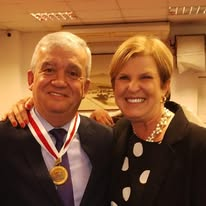
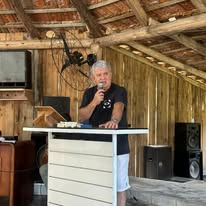
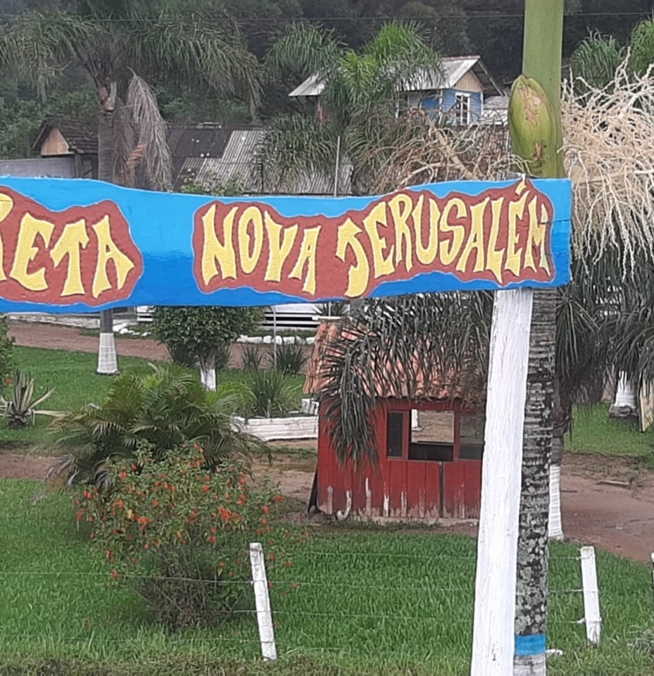
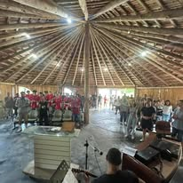

Fundador
Jonas Pires Ramos
Presença central na história do CRETA, reconhecido por muitos como Seu Jonas ou Presidente da Obra.
Jonas Pires Ramos — fundador e figura central da obra.
Jonas Pires Ramos, carinhosamente chamado por muitos residentes e membros da equipe de Seu Jonas ou Presidente da Obra, é reconhecido como uma das figuras centrais da história do CRETA.
Sua presença se confunde com a própria construção da instituição, não apenas pela função administrativa, mas pelo vínculo humano, espiritual e cotidiano com a missão de acolher, orientar e ajudar vidas em reconstrução.
A escolha do nome CRETA também se liga à inspiração bíblica e à busca por um nome que traduzisse missão, caminho e chamado.
Memória e homenagem
Registros da caminhada

Homenagem ao fundador.

Registro histórico de fala e presença.

CRETA Nova Jerusalém.

Capela e espiritualidade.